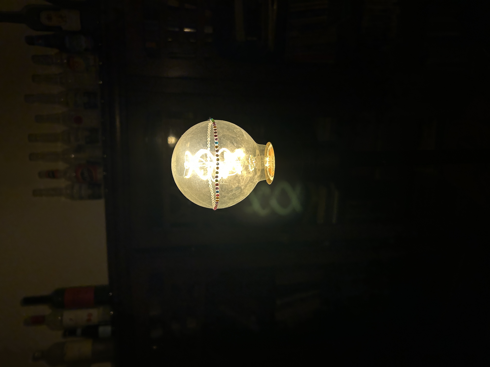

01-16-2024
Space
I'm back at Oberlin! The liminal time between fall and spring semesters always feels odd. I'm acting as both DLEC and MemCo for TWC... or what I like to call "Head of Schemes / CApTaIn".
Winter Term is not nearly as lonely as anticipated, though I am always missing [RE(dact)ED]. Ehhh.
My Winter Term project itself has been pretty chill. We just hang out and talk about traans-portation. Not even all day; like an hour a day on weekdays.
This blog isn't getting increasingly chaotic as I promised, but I did do some redecorating. I hope you enjoy the new coat of paint. I'll probably change it again soon.
I will be more coherent laterrrr. Here is today's post. The next one will come sooner-ish.